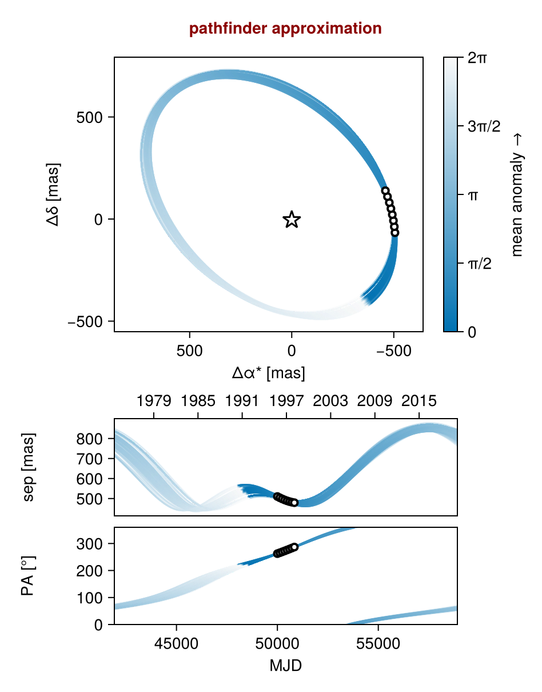
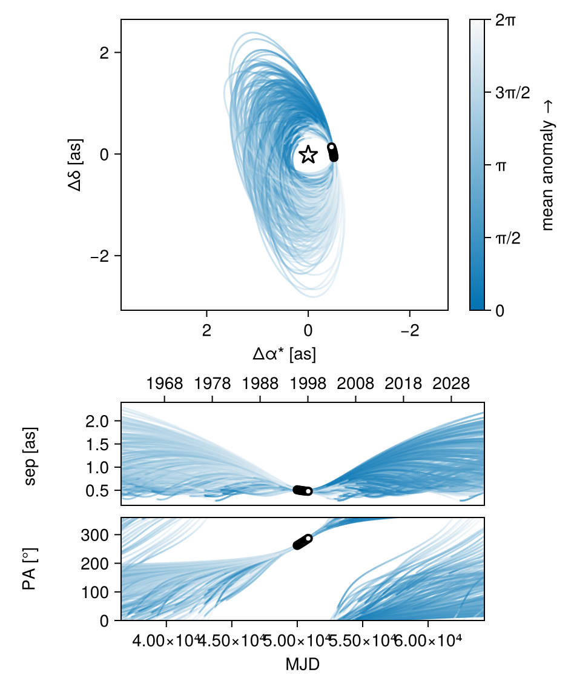
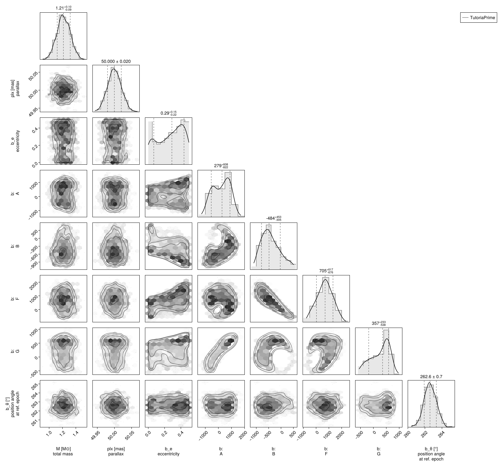
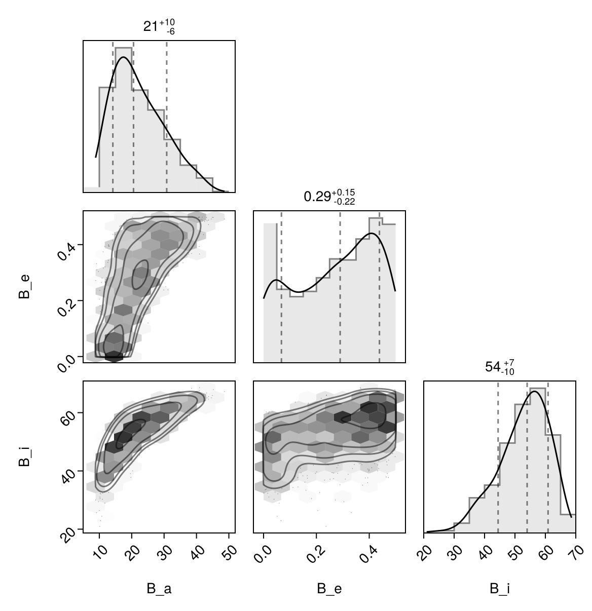

Fit with a Thiele-Innes Basis
This example shows how to fit relative astrometry using a Thiele-Innes orbital basis instead of the traditional Campbell basis used in other tutorials. The Thiele-Innes basis is more suitable then Campbell for fitting low-eccentricity orbits, because it does not have the issues where ω, Ω, and tp become degenerate as eccentricity and/or inclination fall to zero.
At the end, we will convert our results back into the Campbell basis to compare.
using Octofitter
using CairoMakie
using PairPlots
using Distributions
astrom_like = PlanetRelAstromLikelihood(
(epoch = 50000, ra = -505.7637580573554, dec = -66.92982418533026, σ_ra = 10, σ_dec = 10, cor=0),
(epoch = 50120, ra = -502.570356287689, dec = -37.47217527025044, σ_ra = 10, σ_dec = 10, cor=0),
(epoch = 50240, ra = -498.2089148883798, dec = -7.927548139010479, σ_ra = 10, σ_dec = 10, cor=0),
(epoch = 50360, ra = -492.67768482682357, dec = 21.63557115669823, σ_ra = 10, σ_dec = 10, cor=0),
(epoch = 50480, ra = -485.9770335870402, dec = 51.147204404903704, σ_ra = 10, σ_dec = 10, cor=0),
(epoch = 50600, ra = -478.1095526888573, dec = 80.53589069730698, σ_ra = 10, σ_dec = 10, cor=0),
(epoch = 50720, ra = -469.0801731788123, dec = 109.72870493064629, σ_ra = 10, σ_dec = 10, cor=0),
(epoch = 50840, ra = -458.89628893460525, dec = 138.65128697876773, σ_ra = 10, σ_dec = 10, cor=0),
)
@planet b ThieleInnesOrbit begin
e ~ Uniform(0.0, 0.5)
A ~ Normal(0, 1000) # milliarcseconds
B ~ Normal(0, 1000) # milliarcseconds
F ~ Normal(0, 1000) # milliarcseconds
G ~ Normal(0, 1000) # milliarcseconds
θ ~ UniformCircular()
tp = θ_at_epoch_to_tperi(system,b,50000.0) # reference epoch for θ. Choose an MJD date near your data.
end astrom_like
@system TutoriaPrime begin
M ~ truncated(Normal(1.2, 0.1), lower=0.1)
plx ~ truncated(Normal(50.0, 0.02), lower=0.1)
end b
model = Octofitter.LogDensityModel(TutoriaPrime)LogDensityModel for System TutoriaPrime of dimension 9 and 9 epochs with fields .ℓπcallback and .∇ℓπcallback
Initialize the starting points, and confirm the data are entered correcly:
init_chain = initialize!(model)
octoplot(model, init_chain)
We now sample from the model as usual:
results = octofit(model)Chains MCMC chain (1000×24×1 Array{Float64, 3}):
Iterations = 1:1:1000
Number of chains = 1
Samples per chain = 1000
Wall duration = 4.98 seconds
Compute duration = 4.98 seconds
parameters = M, plx, b_e, b_A, b_B, b_F, b_G, b_θy, b_θx, b_θ, b_tp
internals = n_steps, is_accept, acceptance_rate, hamiltonian_energy, hamiltonian_energy_error, max_hamiltonian_energy_error, tree_depth, numerical_error, step_size, nom_step_size, is_adapt, loglike, logpost, tree_depth, numerical_error
Summary Statistics
parameters mean std mcse ess_bulk ess_tail ⋯
Symbol Float64 Float64 Float64 Float64 Float64 Fl ⋯
M 1.2173 0.0979 0.0034 849.1639 701.9013 1 ⋯
plx 50.0000 0.0202 0.0006 1037.0456 642.2759 1 ⋯
b_e 0.2706 0.1549 0.0103 236.8043 237.3353 1 ⋯
b_A 206.4772 643.8024 75.3860 73.5595 257.3851 1 ⋯
b_B -418.2642 367.6459 36.1247 111.4375 106.5828 1 ⋯
b_F 682.6058 608.2991 59.3316 105.5047 99.4358 1 ⋯
b_G 250.4236 357.2107 43.3213 76.2792 218.6513 1 ⋯
b_θy -0.1298 0.0191 0.0007 769.0489 692.2602 0 ⋯
b_θx -1.0011 0.1011 0.0036 855.3501 503.8309 1 ⋯
b_θ -1.6996 0.0126 0.0005 564.2144 560.1319 0 ⋯
b_tp 28400.2175 22218.1215 1874.5184 232.0944 345.3683 1 ⋯
2 columns omitted
Quantiles
parameters 2.5% 25.0% 50.0% 75.0% 97.5% ⋯
Symbol Float64 Float64 Float64 Float64 Float64 ⋯
M 1.0254 1.1513 1.2139 1.2845 1.4069 ⋯
plx 49.9608 49.9865 49.9997 50.0133 50.0380 ⋯
b_e 0.0040 0.1388 0.2899 0.4053 0.4919 ⋯
b_A -916.1800 -371.4898 279.1039 761.3114 1237.0792 ⋯
b_B -974.6693 -699.0902 -483.9807 -171.4258 405.4701 ⋯
b_F -519.0970 273.7790 704.5283 1116.0930 1856.9890 ⋯
b_G -471.9630 -34.0346 356.6921 544.9304 717.2330 ⋯
b_θy -0.1700 -0.1419 -0.1279 -0.1165 -0.0984 ⋯
b_θx -1.2177 -1.0625 -0.9940 -0.9260 -0.8290 ⋯
b_θ -1.7239 -1.7081 -1.7000 -1.6910 -1.6748 ⋯
b_tp -25977.8185 16733.0384 33602.1673 48073.5509 49816.2050 ⋯
Notice that the fit was very very fast! The Thiele-Innes orbital paramterization is easier to explore than the default Campbell in many cases.
We now display the results:
octoplot(model,results)
octocorner(model, results, small=false)
Conversion back to Campbell Elements
To convert our chain into the more familiar Campbell parameterization, we have to do a few steps. We start by turning the chain table into a an array of orbit objects, and then convert their type:
orbits_ti = Octofitter.construct_elements(model, results, :b, :) # colon means all rows1000-element Vector{ThieleInnesOrbit{Float64}}:
ThieleInnesOrbit{Float64}(0.38543483977876386, 34884.75218659194, 1.3565963890111834, 50.01893306592875, 719.7227937651473, 64.57404507641213, -212.88899077070553, 519.218374669111, -4.67544960585031, -10.232379238110495, 18555.609655562563, 0.12367868671775888, 1.5014438111890236)
ThieleInnesOrbit{Float64}(0.38659952004786635, 31184.512407282997, 1.3904105397111532, 50.017531976844346, 852.5762248303417, -16.75244475222578, -112.71513892379583, 556.6176161696712, -3.2125324927797587, -13.117260190202305, 22383.790626794624, 0.10252657700881918, 1.5035001197943887)
ThieleInnesOrbit{Float64}(0.47683894010394573, 26457.32803561851, 1.1372364016782566, 50.018231058450375, 875.4199865566069, -185.7540751621331, 29.224967059515844, 645.1701245693221, -2.9587526891152125, -12.733765807887195, 26450.74470262703, 0.08676252632007808, 1.6801531170484418)
ThieleInnesOrbit{Float64}(0.3555478250169321, 30067.69076846333, 1.2255500244288746, 50.00304297343291, 846.1570841078818, -109.53604389791616, 30.277206622523483, 568.4117089468599, -1.1482753704327437, -12.762735602177289, 23334.556709922206, 0.0983491335179941, 1.4503141205917425)
ThieleInnesOrbit{Float64}(0.3232142956914149, 1688.919665682799, 1.1991255872387734, 50.00210533091613, 360.4434609977451, -651.2816643980406, 1339.9869413058163, 360.9828892316552, -23.79148854629527, 4.167324281267265, 49592.561273815016, 0.046275759398195754, 1.3982650543791972)
ThieleInnesOrbit{Float64}(0.16813991336271547, 24484.64450865271, 1.1465641326667744, 49.99991060470284, 521.8623504214386, -404.5141202457645, 761.0851169280921, 433.097050817473, -13.300743264823675, 6.67597546594923, 27679.428047541016, 0.08291115804508904, 1.185010744619897)
ThieleInnesOrbit{Float64}(0.3221295165650853, 12653.928821205998, 1.1295009650166414, 49.98523530939015, 779.2102663017848, -449.78060016103274, 889.8252898029036, 538.4370756347778, -15.591570629715967, 11.581874374760377, 39938.02434240352, 0.057462367536561816, 1.3965729904454631)
ThieleInnesOrbit{Float64}(0.44662196101109486, 7097.053962768128, 1.0613876598917258, 49.979723336793306, 1011.107843631344, -474.60592676145774, 776.7552616120604, 615.1219030017417, 12.30299200504964, -16.056038892025462, 45682.44571014882, 0.05023665869398715, 1.6168382203386757)
ThieleInnesOrbit{Float64}(0.3027440104998142, 265.3141400844397, 1.1153011320672113, 49.98482069319311, -24.141027457685166, -724.7916398440916, 1330.126812769214, 285.6059733178679, -23.38860172886169, -4.091919693957893, 49939.7702057064, 0.045954024698037395, 1.366889526303499)
ThieleInnesOrbit{Float64}(0.33685549623404, 49807.67416570528, 1.0915275810705947, 49.990624480171, -161.28711370095814, -781.7419216541864, 1409.8717361735683, 259.5282441277755, -24.810390096305014, -6.939667749221841, 56028.55081807281, 0.04096007124830151, 1.419835876368796)
⋮
ThieleInnesOrbit{Float64}(0.00972215401252755, 44381.48217734446, 1.3101700943999117, 49.99403986412185, 220.44995973573046, 425.5153617431372, -348.94036136567115, 253.61806183822114, -2.5378208313198907, 4.886378566809695, 9964.12847915371, 0.23031953454320184, 1.0097698770053218)
ThieleInnesOrbit{Float64}(0.23639709323332278, 41717.325480396634, 1.0628671739952857, 50.008705079948534, 451.4161954180343, 200.90929862882496, -227.768462078467, 431.260151775511, -2.30933826531669, -2.8005542148102514, 11451.070551078314, 0.20041212943459133, 1.272463111950859)
ThieleInnesOrbit{Float64}(0.19617729475608894, 32622.82432850364, 0.9915485010839962, 50.02587713045862, 639.6365833514386, -240.5974173555048, 332.965116168446, 506.41481652243164, -4.646354311835741, 7.837569615862416, 20105.209393084384, 0.11414620900375877, 1.219881493004347)
ThieleInnesOrbit{Float64}(0.39299614905339164, 22315.821232581773, 1.1320098731684436, 49.97626488947603, 878.3237547622078, -334.3432079215859, 459.5537055681277, 604.5356790547137, 6.324410531452775, -12.757299170053603, 30338.11946879391, 0.0756452105018551, 1.5148834980155401)
ThieleInnesOrbit{Float64}(0.4565231524460514, -32597.430337510363, 1.1796292898119822, 49.9738175685874, 744.0403118080479, -732.456966333725, 1831.7319114081142, 535.9748593997921, -33.955348636684725, 11.442331147117917, 84656.93227793452, 0.027108629756543975, 1.6370734772353956)
ThieleInnesOrbit{Float64}(0.4915572854381079, -16444.210466111195, 1.2476064515819987, 49.987696000775514, 1426.9685698747833, -355.94570169314375, 1062.8610150466225, 783.7015176008101, -20.4577893706634, 24.212263247520127, 70147.835696177, 0.032715669851698874, 1.7127696333134423)
ThieleInnesOrbit{Float64}(0.4964411361690315, -11371.29007127801, 1.252962004192438, 50.01827351130884, 1144.3524389068828, -582.8828227038958, 1235.3682687592325, 688.1384247056409, -21.926639508415, 18.45887755219826, 64019.45597856447, 0.03584743728868538, 1.7238707333613876)
ThieleInnesOrbit{Float64}(0.026312567932901203, 38296.24803836421, 1.15868230368863, 50.02935112339404, 212.59630489728758, -401.1806979300531, 422.597778835606, 345.6318764862083, -6.719086885024094, -2.902825803775868, 12875.553166999265, 0.17823959900452133, 1.0266680369106072)
ThieleInnesOrbit{Float64}(0.03957620611695146, 37627.710916251155, 1.1205358378741213, 50.009593354523204, -18.472316075750083, -525.4244681842061, 498.57065606120426, 51.542172632079094, -3.2132370285644414, -4.515988191535147, 12576.601752133354, 0.1824764335133739, 1.0403912954111838)Here is one of those entries:
display(orbits_ti[1])We can now make a table of results (and visualize them in a corner plot) by querying properties of these objects:
table = (;
B_a = semimajoraxis.(orbits_ti),
B_e = eccentricity.(orbits_ti),
B_i = rad2deg.(inclination.(orbits_ti)),
)
pairplot(table)
We can also convert the orbit objects into Campbell parameters:
orbits_campbell = Visual{KepOrbit}.(orbits_ti)
orbits_campbell[1]KepOrbit{Float64}
─────────────────────────
a [au ] = 15.2
e = 0.38543484
i [° ] = 47.8
ω [° ] = 205.0
Ω [° ] = 168.0
tp [day] = 34900.0
M [M⊙ ] = 1.36
period [yrs ] : 50.8
mean motion [°/yr] : 7.09
──────────────────────────
plx [mas] = 50.0
distance [pc ] : 20.0
──────────────────────────